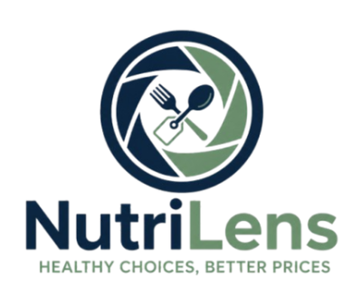
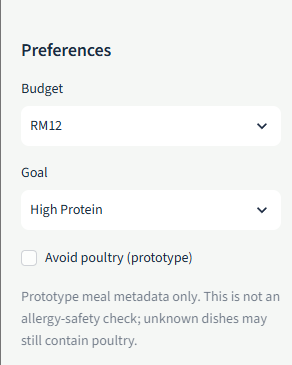
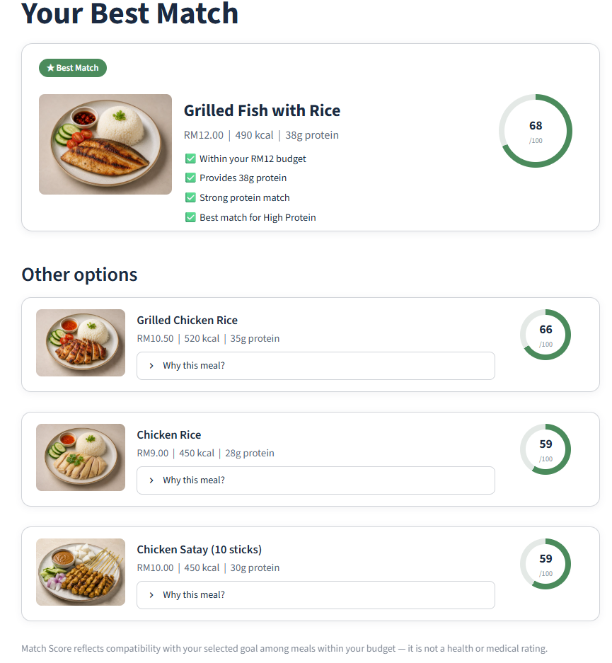
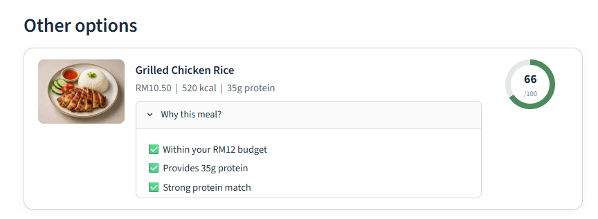
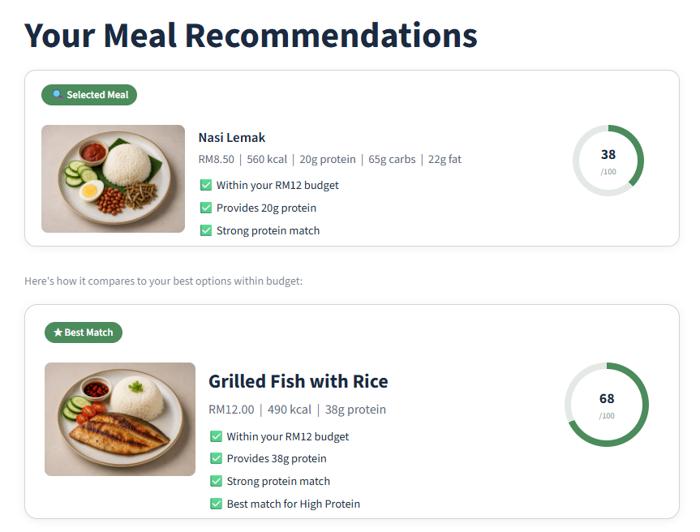
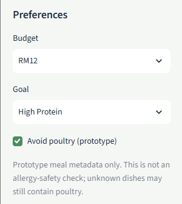
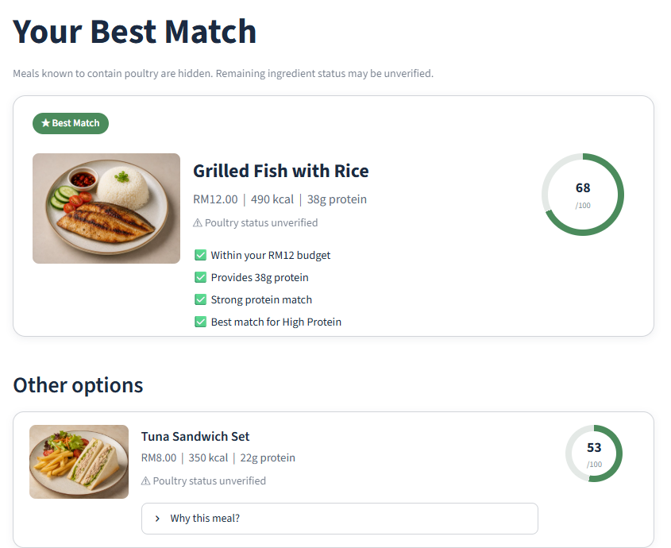
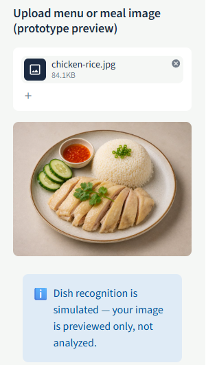
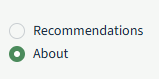
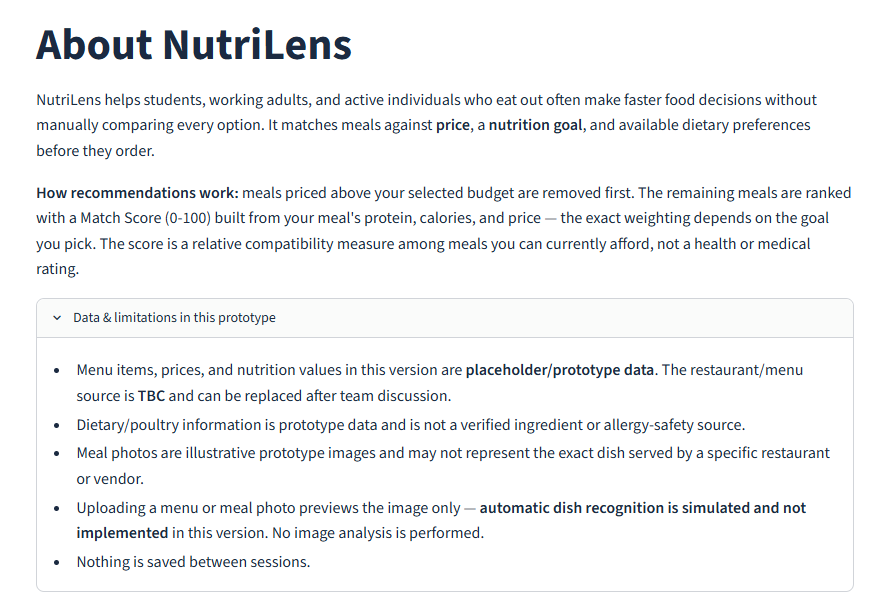

NutriLens is an interactive Streamlit MVP built to test one core assumption: will budget-conscious users use a tool that recommends meals based on budget and nutrition goal before they order? This document walks through the current working prototype as it behaves today. Each section shows an implemented interaction, what it does, and where relevant, the validation insight it responds to.

The sidebar is where every recommendation starts. A user selects one of eight budget tiers from RM6 to RM25 and chooses a nutrition goal: High Protein, Low Calorie, Best Value, or Balanced. Optional controls allow the user to search for a known meal, apply the prototype poultry filter, or preview an uploaded meal or menu image. In this walkthrough, the user sets RM12 and High Protein.

NutriLens first removes meals above the selected budget, then ranks the eligible options using a Match Score from 0-100 for the chosen nutrition goal. The highest-scoring meal is presented as the Best Match, followed by up to three alternatives. In this example, Grilled Fish with Rice is the Best Match at 68/100.
Match Score represents relative compatibility within the eligible options; it is not a health or medical rating.

NutriLens explains the reasoning behind its recommendations instead of showing only a score. Alternative meals include an expandable ‘Why this meal?’ section that links the recommendation back to measurable factors such as budget, protein content, and the selected nutrition goal.

Users who already know what they are considering can search for a meal by name instead of relying only on the ranked list. Searching for Nasi Lemak displays its full nutrition profile and evaluates it against the current budget and goal. The Best Match remains visible underneath, allowing the user to compare the meal they intended to order with a stronger-ranked alternative.


Users who want to avoid poultry can enable the prototype poultry filter. Meals known to contain poultry are removed before ranking. Meals whose poultry status is unknown remain visible but are clearly marked ‘Poultry status unverified’ rather than implied safe. The feature is intentionally limited to poultry metadata and is not an allergy-safety or ingredient-verification system.

A user can upload a meal or menu image and immediately preview it inside NutriLens. In the current MVP, no recognition or analysis is performed on the uploaded image. Uploading an image does not change the recommendation results; recommendations continue to use the selected budget and nutrition goal. The interface states this boundary directly so prototype behavior is not mistaken for implemented AI recognition.


The About view explains the recommendation approach and consolidates the prototype’s limitations in one place. Current nutrition and meal information comes from prototype data rather than a live restaurant source. Poultry metadata is not verified ingredient data, meal photos are illustrative rather than verified vendor photography, image upload performs no recognition or analysis, and user activity is not saved between sessions.
The current NutriLens MVP uses a static prototype dataset of 15 meals and does not yet connect to live restaurant menus, user accounts, or persistent history. Match Score represents relative compatibility with the selected goal among eligible meals; it is not a health or medical rating. The poultry filter relies on prototype metadata rather than verified ingredient or allergy information, and uploaded images are previewed only. These boundaries are intentional: the MVP is designed to test the usefulness of budget- and nutrition-based meal recommendations before investing in full image recognition, restaurant integration, and persistent user features.